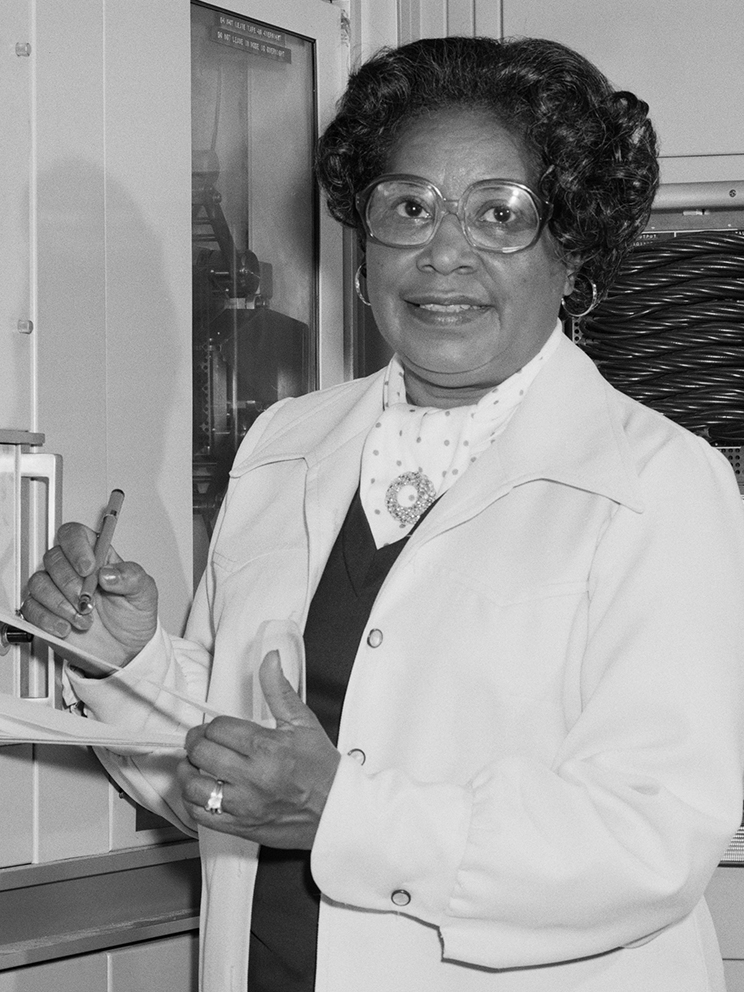
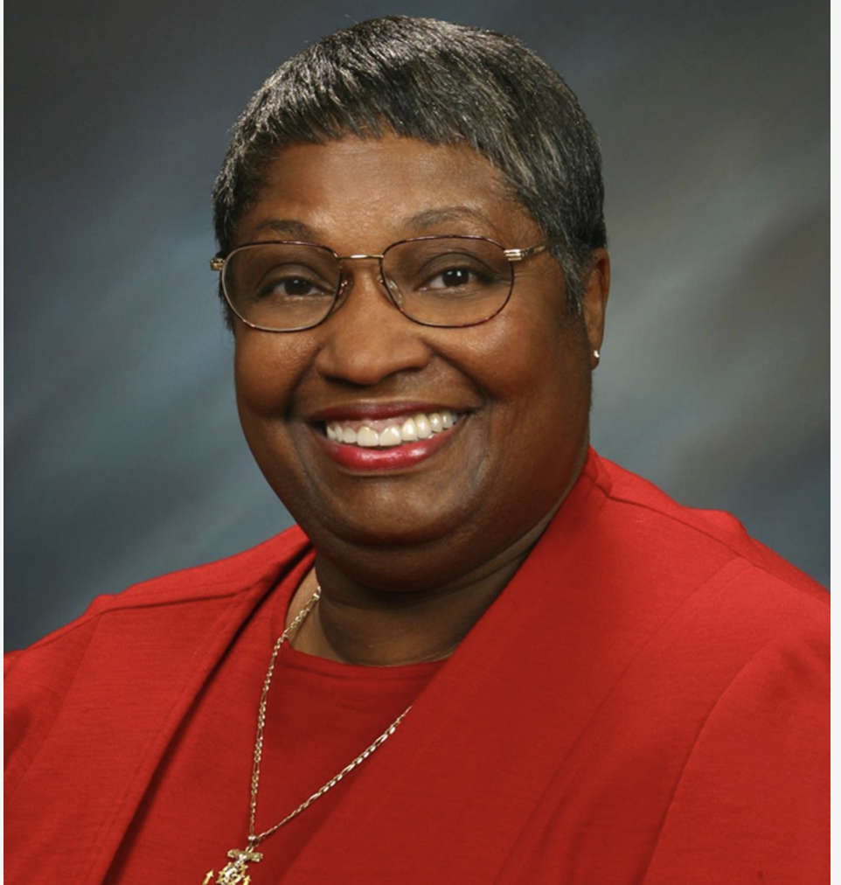
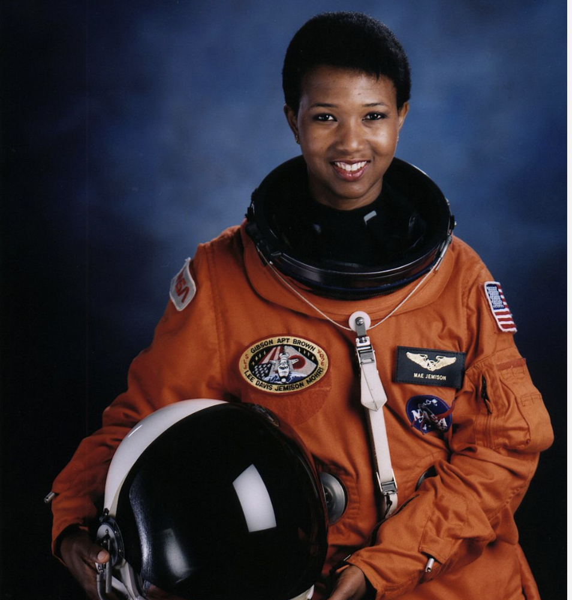
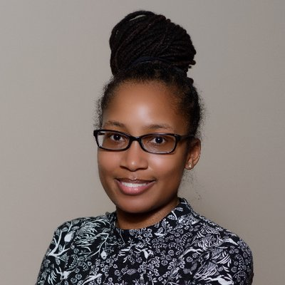
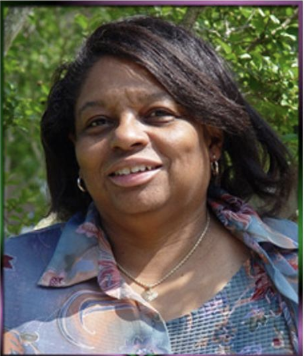
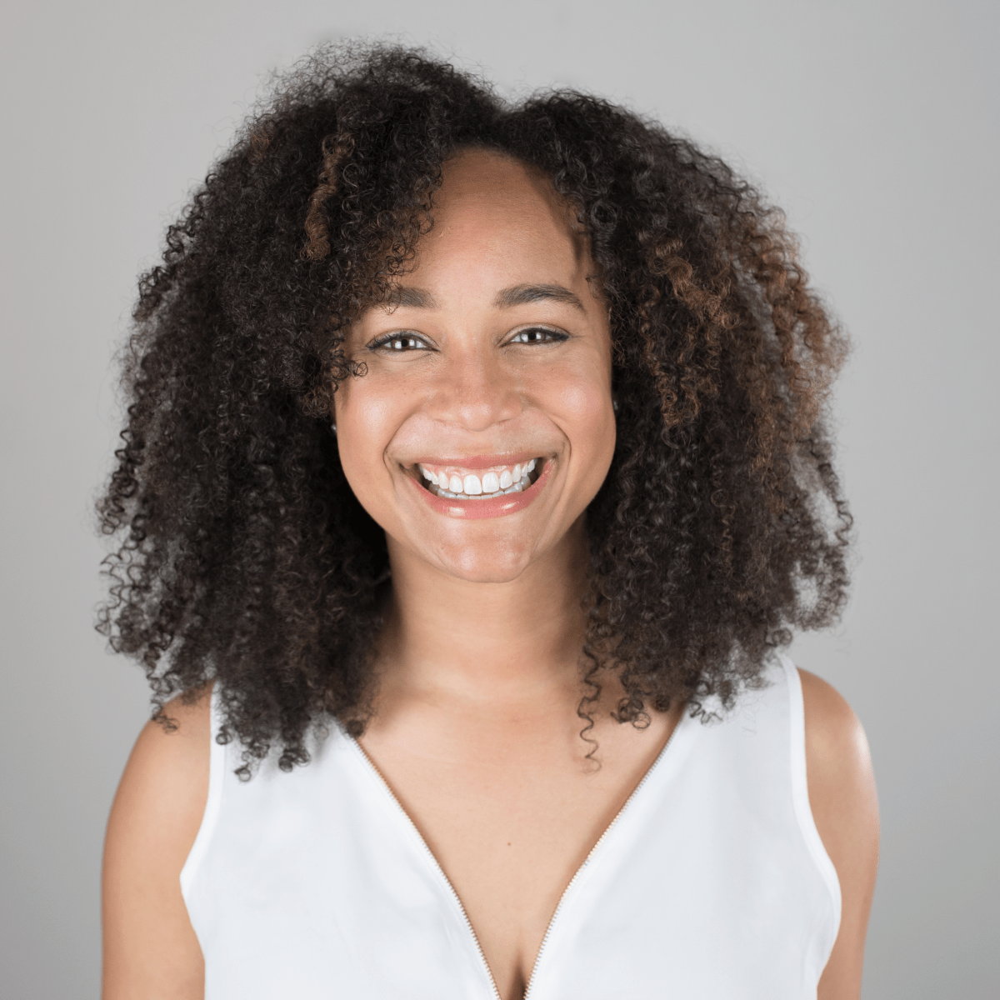

- .Annie Easley - Easley started working as a "human computer" at the National Advisory Committee on Aeronautics (NACA) in 1955. By the 1970s, NACA had become NASA, and actual computers were replacing human computers. S0 Easley decided to pursue a mathematics degree and learned how to code.She continued to do crucial work to support NASA's various space programs. That included working on software for the high-energy Centaur booster rocket, which helps launch spacecrafts. These were used on the Viking, Voyager, and Cassini crafts, and variants of the Centaur are still used today. 2.Dorothy Vaughan - was an African American mathematician and human computer who worked for the National Advisory Committee for Aeronautics (NACA), and NASA, at Langley Research Center in Hampton, Virginia. In 1949, she became acting supervisor of the West Area Computers, the first African-American woman to supervise a group of staff at the center. 3. Katherine Johnson - Katherine Johnson a college professor who noticed her gift and pushed her to pursue advanced math courses and how she eventually became a NASA mathematician who calculated, among many other computations, the trajectory for the space flight of Alan Shepard, the first American in space; John Glenn, the first American to orbit earth; and Apollo 11, the first human mission to the moon.
- 4. Mary Winston Jackson was an African American mathematician and aerospace engineer at the National Advisory Committee for Aeronautics (NACA), which in 1958 was succeeded by the National Aeronautics and Space Administration (NASA). She worked at Langley Research Center in Hampton, Virginia, for most of her career. She started as a computer at the segregated West Area Computing division. She took advanced engineering classes and in 1958 became NASA's first black female engineer. 5. Alexa Canady - The first Black woman to become a neurosurgeon, Dr. Canady actually started out as a mathematics major at the University of Michigan. In fact, she almost dropped out after what she called a "crisis of confidence." But luckily, she instead started working in a genetics lab at her school through a summer research program — and fell in love with medicine.She ended up graduating in 1971 with a degree in zoology, got her medical degree in 1975, and became certified by the American Board of Neurological Surgery in 1984. Dr. Canady went on to become the chief of neurosurgery at the Children's Hospital of Michigan in 1987, earn two honorary degrees, and many, many awards for her patient-centered approach to her work. 6. Mae Jemison - Before she was flying in space, Dr. Jemison first studied chemical engineering at Stanford University. She then received her medical degree from Cornell University Medical College in 1981. After spending a few years working as a general practitioner and Peace Corps medical officer for Sierra Leone and Liberia, Dr. Jemison switched her focus to becoming an astronaut. She applied for NASA's astronaut program in 1986 and, in 1987, was one of 15 people chosen out of about 2,000. That made her the first African-American woman to be admitted to the program. And in September of 1992, she also became the first African-American woman in space (aboard the space shuttle Endeavor). She was appointed the science mission specialist, meaning she was responsible for conducting experiments while in space. She resigned from NASA in 1993, accepted a teaching position at Dartmouth University, and founded a company that develops and markets real-world applications for technology.
- 7.Andrea Lawrence - is a computer scientist and educator, and the first African-American to get a Ph.D. from the Georgia Institute of Technology in computer science. She is an associate professor at Spelman College.In 2014, Lawrence was awarded the SIGCSE award for Lifetime Service to the computer science education community. The award honours an individual with a long history of dedicated volunteer service to the computer science education community 8. Brandeis Marshall - is an American data scientist and Associate Professor at Spelman College, where she serves as Chair of the Department of Computer and Information Sciences. She has also worked to broaden participation in the field of data science to increase representation of underrepresented minorities.







